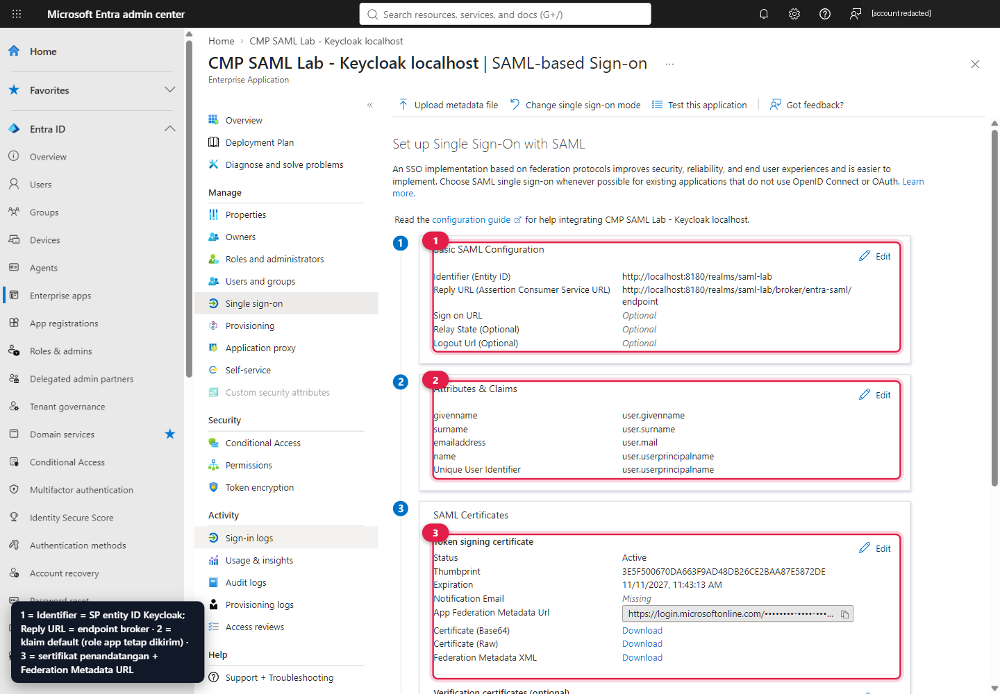
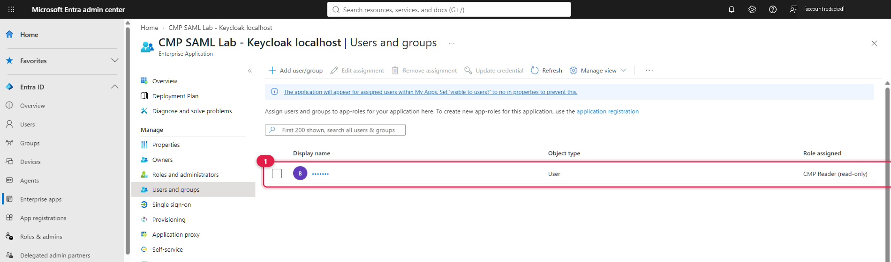
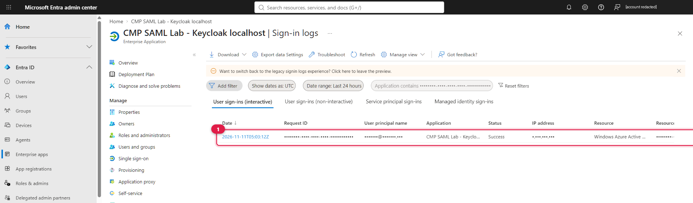

Satu Enterprise App.
Enam panggilan Graph.
New-EntraSamlApp.ps1 mengotomatiskan apa yang di video dilakukan lewat portal: aplikasi non-gallery, mode SAML, Identifier dan Reply URL dari Keycloak, app role, sertifikat signing, dan assignment user. Hasilnya diverifikasi di portal Entra.
az account get-access-token --resource-type ms-graph; token tidak pernah ditulis ke disk.Nilai yang harus cocok dengan Keycloak
HARUS IDENTIK| Field di Entra | Nilai lab | Sumber di Keycloak |
|---|---|---|
| Identifier (Entity ID) | http://localhost:8180/realms/saml-lab | Service provider entity ID pada IdP entra-saml (Gambar 8, penanda 1) |
| Reply URL (ACS) | http://localhost:8180/realms/saml-lab/broker/entra-saml/endpoint | Redirect URI pada IdP entra-saml (Gambar 7, penanda 1) |
| Sign on URL | kosong | Login dimulai dari SP (SP-initiated), jadi tidak diperlukan. |
| App Federation Metadata URL | https://login.microsoftonline.com/<tenant>/federationmetadata/2007-06/federationmetadata.xml?appid=<appId> | Diimpor ke Keycloak sebagai file (langkah 3). |
Entra menerima http://localhost sebagai Reply URL dan Identifier untuk lab ini. Untuk produksi gunakan HTTPS dan domain milik organisasi.
Alur Microsoft Graph (idempotent)
Instansiasi aplikasi non-gallery
Template
8adf8e6e-67b2-4cf2-a259-e3dc5476c621adalah “Create your own application” di portal. Jika aplikasi dengan nama yang sama sudah ada, script memakainya kembali.POST /v1.0/applicationTemplates/8adf8e6e-67b2-4cf2-a259-e3dc5476c621/instantiate { "displayName": "CMP SAML Lab - Keycloak localhost" }Mode SAML dan wajib assignment
PATCH /v1.0/servicePrincipals/{sp-id} { "preferredSingleSignOnMode": "saml", "appRoleAssignmentRequired": true }appRoleAssignmentRequired=truemembuat user yang tidak di-assign ditolak oleh Entra (AADSTS50105) sebelum assertion dibuat.Basic SAML Configuration
PATCH /v1.0/applications/{app-object-id} { "identifierUris": ["http://localhost:8180/realms/saml-lab"], "web": { "redirectUris": ["http://localhost:8180/realms/saml-lab/broker/entra-saml/endpoint"] } }Jika kebijakan tenant menolak identifier tersebut, script beralih ke
api://{appId}dan Anda harus menyamakan SP entity ID di Keycloak. Di tenant lab ini fallback tidak diperlukan.App role pada service principal
PATCH /v1.0/servicePrincipals/{sp-id} { "appRoles": [ ...role bawaan template..., { "value": "CMP.Reader", "displayName": "CMP Reader (read-only)", "allowedMemberTypes": ["User"], "isEnabled": true, "id": "<guid>" }, { "value": "CMP.Admin", "displayName": "CMP Admin", "allowedMemberTypes": ["User"], "isEnabled": true, "id": "<guid>" } ] }PATCH
appRolesmenimpa seluruh koleksi, jadi role bawaan template ikut dikirim ulang. Role ini disimpan di service principal (sesuai panduan Graph untuk SAML), bukan di objek application; karena itu di lab ini role tidak tampil di App registrations → App roles, tetapi tampil saat assignment (Gambar 16).Sertifikat token-signing SAML
POST /v1.0/servicePrincipals/{sp-id}/addTokenSigningCertificate { "displayName": "CN=CMP SAML Lab Keycloak", "endDateTime": "<sekarang + 1 tahun>" } PATCH /v1.0/servicePrincipals/{sp-id} { "preferredTokenSigningKeyThumbprint": "<thumbprint>" }Tanpa PATCH kedua, sertifikat sudah dibuat tetapi belum menjadi sertifikat signing aktif.
Assign user ke CMP.Reader
POST /v1.0/servicePrincipals/{sp-id}/appRoleAssignedTo { "principalId": "<user-object-id>", "resourceId": "{sp-id}", "appRoleId": "<CMP.Reader id>" }Default: user yang sedang login di Azure CLI. Pakai
-AssignUserPrincipalNamedan-AssignRole CMP.Adminuntuk user/role lain.
Setelah selesai, ID non-rahasia (tenant, appId, object ID, entity ID, metadata URL, thumbprint) ditulis ke .local/entra.json untuk dipakai langkah 3. Script juga menunggu sampai metadata federasi dapat diunduh.
Verifikasi di portal Entra


- Basic SAML Configuration: Identifier dan Reply URL sama dengan nilai Keycloak.
- Attributes & Claims: klaim default Entra; tidak ada claims-mapping policy tambahan.
- SAML Certificates: sertifikat aktif dan App Federation Metadata Url yang diimpor ke Keycloak.


role = CMP.Reader.

- Sign-in interaktif ke aplikasi lab berstatus Success pada 11 Nov 2026. IP, UPN dan request ID disamarkan.
Klaim yang benar-benar dikirim
DARI CAPTURE LIVE| Klaim SAML (Attribute Name) | Sumber Entra | Mapper Keycloak | Hasil di lab |
|---|---|---|---|
http://schemas.microsoft.com/identity/claims/objectidentifier | bawaan (selalu) | Principal broker + entra_oid | Terkirim. Kunci identitas (immutable). |
http://schemas.microsoft.com/identity/claims/tenantid | bawaan (selalu) | entra_tenant_id | Terkirim. |
http://schemas.xmlsoap.org/ws/2005/05/identity/claims/name | user.userprincipalname | email | Terkirim (UPN). |
http://schemas.xmlsoap.org/ws/2005/05/identity/claims/givenname | user.givenname | firstName | Terkirim. |
http://schemas.xmlsoap.org/ws/2005/05/identity/claims/surname | user.surname | lastName | Tidak terkirim: surname user kosong. |
http://schemas.xmlsoap.org/ws/2005/05/identity/claims/emailaddress | user.mail | tidak dipetakan | Tidak terkirim: atribut mail kosong. |
http://schemas.microsoft.com/ws/2008/06/identity/claims/role | app role assignment | CMP.Reader → cmp-viewer, CMP.Admin → cmp-admin | Terkirim: CMP.Reader. |
http://schemas.microsoft.com/identity/claims/displayname, …/identityprovider, http://schemas.microsoft.com/claims/authnmethodsreferences | bawaan | tidak dipetakan | Terkirim; berguna untuk audit (mis. bukti MFA). |
lastName tidak terisi dan Keycloak menampilkan form Update account information pada login pertama (Gambar 5). Isi surname/mail di Entra, atau ubah first broker login flow, jika ingin login pertama tanpa interaksi.Role claim dikirim otomatis untuk app role assignment; tidak perlu menambah klaim grup. Jika memakai grup, perhatikan batas jumlah grup dalam token dan pertimbangkan app role sebagai gantinya.
Sertifikat, metadata, dan rotasi
Siklus hidup
- Masa berlaku lab: 1 tahun (parameter
endDateTime). - Entra mengirim notifikasi kedaluwarsa ke alamat di Notification Email blade SAML.
- Assertion ditandatangani RSA-SHA256.
Rotasi tanpa downtime
- Tambahkan sertifikat baru (belum aktif).
- Tambahkan sertifikat baru ke Keycloak, atau impor ulang metadata.
- Aktifkan sertifikat baru di Entra.
- Hapus sertifikat lama dari keduanya.
Di lab ini cukup jalankan ulang configure setelah sertifikat berubah, karena Keycloak memakai sertifikat statis.
Padanan manual di portal (seperti video)
Buat aplikasi
Entra admin center → Enterprise applications → New application → Create your own application → “Integrate any other application you don't find in the gallery (Non-gallery)”.
Pilih SAML
Single sign-on → SAML → edit Basic SAML Configuration: isi Identifier dan Reply URL dari tabel di atas, simpan.
App role
App registrations → aplikasi yang sama → App roles → buat
CMP.ReaderdanCMP.Admin(allowed member types: Users/Groups).Assignment
Enterprise applications → Properties → Assignment required? = Yes. Users and groups → Add user/group → pilih role.
Salin metadata
Di kartu SAML Certificates, salin App Federation Metadata Url atau unduh Federation Metadata XML untuk langkah 3.